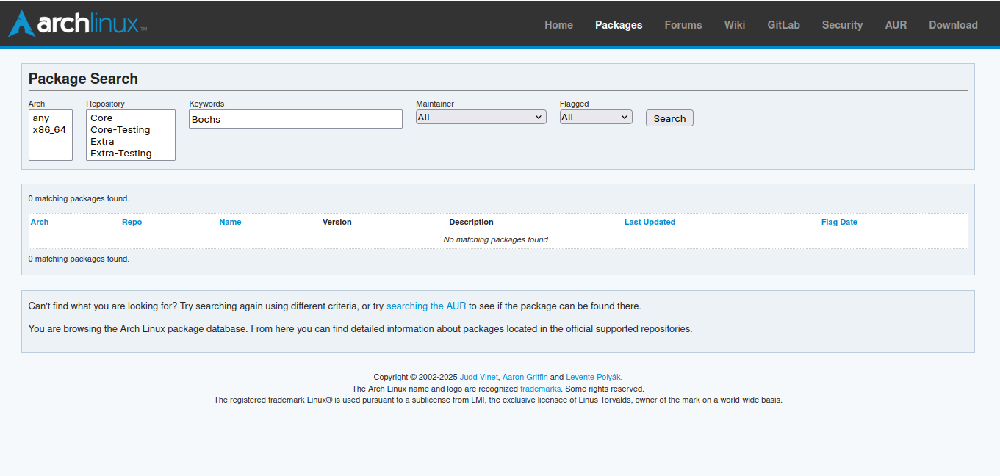
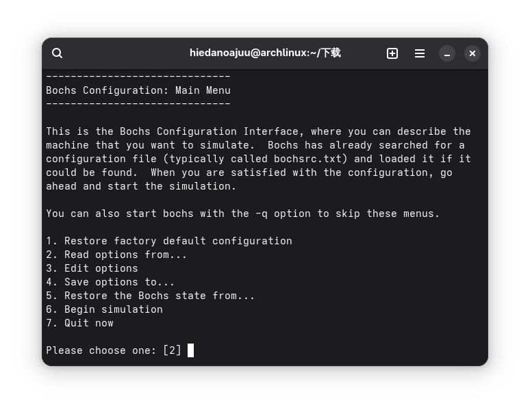
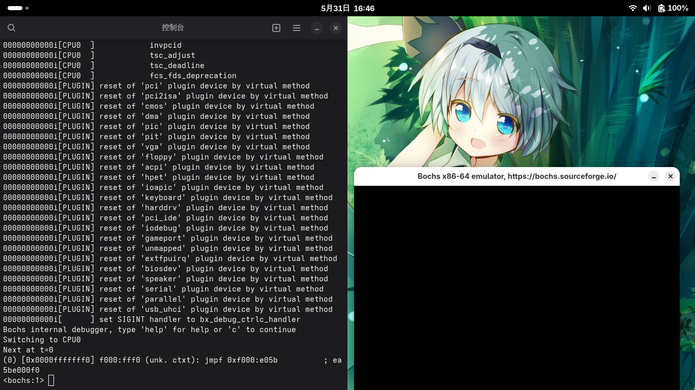

前言
想必各位都还记得在之前编写引导程序时我因微软公司的debug在此情况下不可用而只能对着QEMU的窗口“鬼打墙”的可怜样子。
不过，Bochs为我们提供了一个新的选择。支持断点调试、单步执行。但是在Arch Linux中配置Bochs却颇费一番功夫（当然也可能是我走了弯路（?
安装
首先，如果想要像下载其他包一样无脑pacman是不可能的，因为Arch Linux的官方仓库（截至本文发布时间）并没有包含Bochs。1
sudo pacman -S bochs

那么，就要放弃了吗？Bochs的官网https://bochs.sourceforge.io/还提供了Bochs的下载方式，选择最新的bochs-3.0-1.x86_64.rpm下载即可；
当然也可以下那个bochs-3.0.tar.gz手动编译，但我就懒得自己编译了。.rpm是Red Hat的软件包文件，可以先把其中的文件提取出来:
1 | rpmextract.sh bochs-*.rpm |
接下来会得到一个/usr目录，把该目录拷到根目录；1
sudo cp -rf ./usr /
这样就相当于安装完成了。
配置
此时如果你运行bochs，会发现这样一个报错:1
2
3
4
5
6
7
8
900000000000i[ ] LTDL_LIBRARY_PATH not set. using compile time default '/usr/lib64/bochs/plugins'
00000000000p[ ] >>PANIC<< bx_plugin_ctrl_init() failure: no plugins found
00000000000e[SIM ] notify called, but no bxevent_callback function is registered
00000000000e[SIM ] notify called, but no bxevent_callback function is registered
========================================================================
Bochs is exiting with the following message:
[ ] bx_plugin_ctrl_init() failure: no plugins found
========================================================================
00000000000i[SIM ] quit_sim called with exit code 1
提示bochs找不到插件。这其实是我们前一步暴力安装的遗留问题，不过解决起来也很简单，编辑一下环境变量LTDL_LIBRARY_PATH:1
export LTDL_LIBRARY_PATH=/usr/lib64/bochs/plugins
然后再重新运行bochs即可:

如果想要调试特定的硬盘镜像，则需要新建一个bochsrc.txt文件(这里以asm.vhd为例):1
2
3
4
5
6
7
8
9# boshsrc.txt
megs: 32 # 模拟内存大小，32MB足够
boot: disk # 从硬盘启动
ata0-master: type=disk, path="asm.vhd", mode=vpc, biosdetect=auto, translation=auto
display_library: x
# 显示库可依据具体桌面环境设为: (w)x,sdl,gtk
cpu: count=1, ips=1000000
别忘了还要再建一个启动脚本，指定bochsrc.txt为配置文件，并带上-dbg的参数:1
bochs -f bochsrc.txt -q -dbg

最后效果如图所示，左边窗口是
bochs的控制台，右边窗口则是虚拟显示器，便于监控和调试汇编程序的运行。